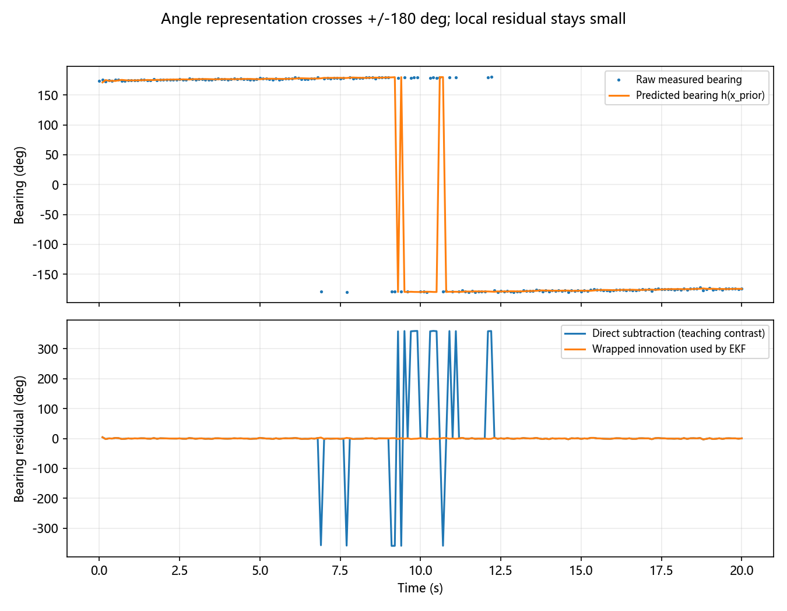
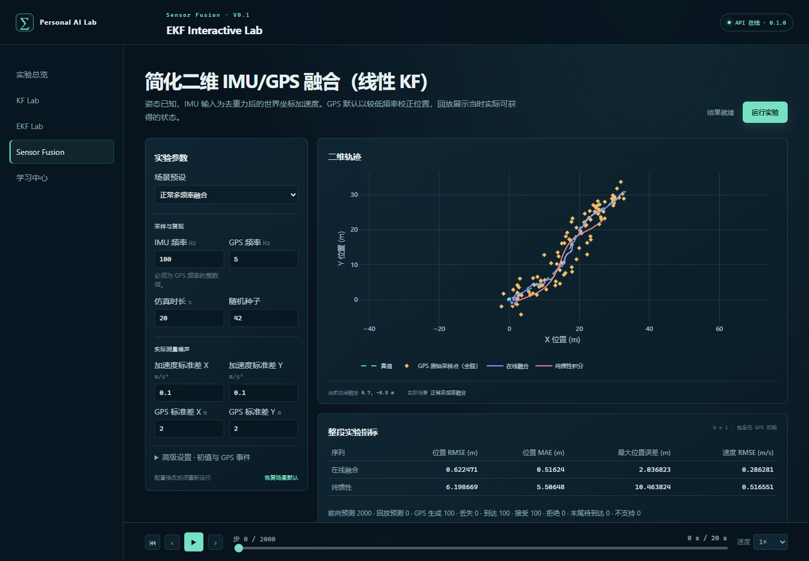
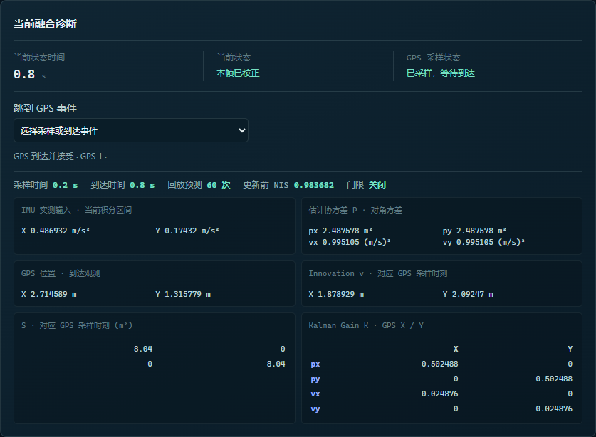
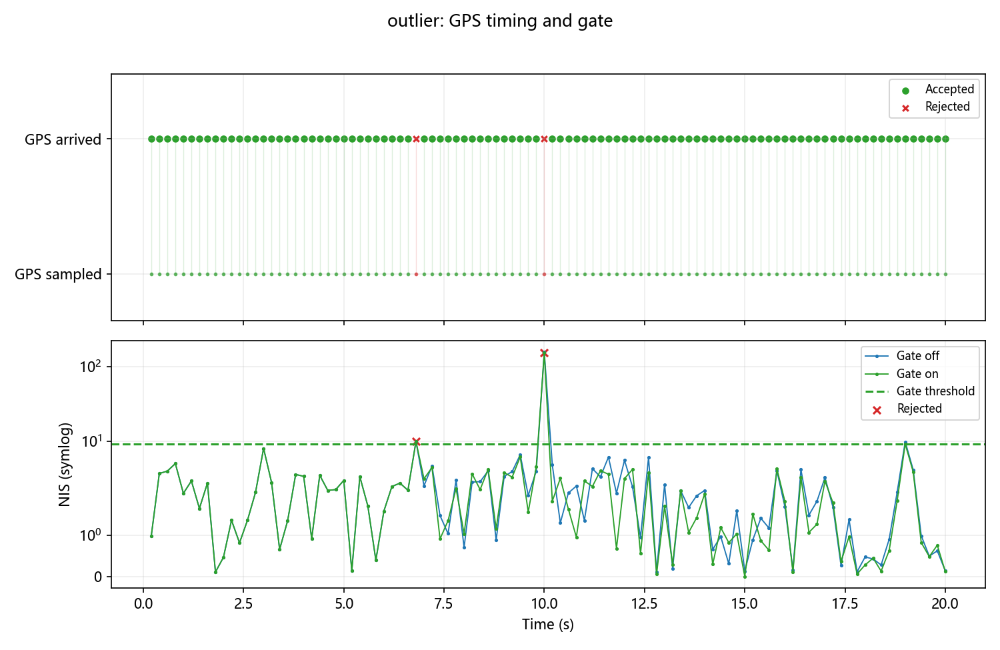

为什么做
读公式很容易把“预测”“观测更新”和“协方差”看成几行抽象矩阵。把这些量放回时间轴，就可以追问先验如何得到、观测何时到达、噪声假设如何改变修正幅度，以及拒绝异常观测后保留了哪些信息。
项目先用线性位置观测建立 KF 基线，再用固定信标的距离和方位角观测引入 EKF 的局部线性化，最后用已去重力的二维 IMU 加速度与低频 GPS 位置做多传感器融合。融合实验假设姿态已知。每个模块都能运行、回放、查看当前帧诊断，并导出实际生效的配置与结果。
三个模块，从可解释的基线开始
KF：先看线性预测和更新
KF 模块使用二维匀速状态 [px, py, vx, vy]，GPS 只观测位置。界面可以调整 X/Y 测量噪声、离散或连续过程噪声、初始不确定度、时长和随机种子，然后点击“运行实验”。

在种子 42、20 s、0.1 s 步长且双轴 GPS 标准差均为 2 m 的 KF 基线中，后验位置 RMSE 为 0.905974 m。同一批 GPS 位置观测的 RMSE 为 2.6862 m。误差使用同一合成真值和 t>0 的 200 个采样时刻计算，结论限于这组配置。

EKF：非线性来自观测模型
EKF 模块把观测换成固定信标到目标的距离和方位角。运动预测仍是线性的，但观测函数包含平方根和 atan2，每次更新都在同一个先验状态上计算预测观测 h 和雅可比 H。方位残差由测量与预测的角差归一化到 [-π, π) 得到。

跨角预设在 10.4 s 的直接角差为 +359.629°，归一化后用于更新的创新是 -0.371°。整段包角创新的最大绝对值为 4.225°。在原点信标、种子 42、20 s、0.1 s 步长和 1 m／1° 观测噪声标准差下，估计位置 RMSE 为 0.345611 m。


Fusion：把问题放回传感器时序
Fusion 是简化的二维 IMU/GPS 线性 KF。输入假设姿态已知，加速度已经转换到世界坐标并去除重力；IMU 以默认 100 Hz 做预测，GPS 以 5 Hz 校正位置。时间轴分别记录观测的采样和到达。


实验包含正常多频率、GPS 中断恢复、固定延迟补偿和异常观测门限四类场景。中断场景在 [8, 12) s 丢失 20 条 GPS，12.0 s 恢复校正；固定延迟场景把 GPS 延后 60 个 IMU tick，即 0.6 s，并在采样时刻保存先验、观测到达并被接受后，在采样时刻更新，再沿保存的 IMU 输入重传播至到达时刻。此前已输出的状态历史保持冻结。


如何验证数值、时序和界面
这次交付把数值、时序和界面放在同一条证据链上。
- 三个模块的离线实验与真实 HTTP 结果逐项比对，涵盖时间轴、观测、状态、协方差、创新、事件、诊断和指标。
- 固定延迟场景的独立逐前缀参考在延迟 0、2、7 tick 下复算状态和协方差，最大绝对差约为
8.88e-16与6.66e-16。 - 第 3 步集成验收记录了 193 项严格测试通过；生产构建也通过。Chrome 桌面 1440×1000 和窄屏 390×844 均检查了模块切换、参数提交、播放、单步、时间轴定位、导出和错误提示。
Fusion 异常实验采用种子 42、20 s 和默认传感器频率，在 10 s 注入 [25, -15] m 的 GPS 偏移。门限关闭时，滤波器接受这条观测，位置 RMSE 为 1.109734 m。对同一批观测启用默认 NIS 门限 9.21034 后，位置 RMSE 为 0.712547 m。共拒绝两条观测，其中一条未注入偏移。门限值来自当前模型假设下的卡方分布，误拒绝率需要另行统计。



AI 协作放在什么位置
这个项目将 AI 协作用于资料整理、方案拆分、代码实现与验证材料整理。资料整理与方案拆分用于明确模型边界；实现阶段保留离线入口和浏览器 API 的共同执行路径；验证阶段用手算、中心差分、独立参考实现、严格回归和真实 HTTP 对照逐项检查。
这些检查把文章里的数字连回具体配置和可复跑的场景。误差变化的原因、门限的适用条件和模型假设仍需结合这些证据逐项理解。
当前限制
当前证据限于合成二维场景和固定种子。Fusion 的适用条件包括已知姿态、已去重力的加速度和单源有序固定延迟。真实 IMU/GNSS、零偏估计、三维姿态、任意乱序和飞行验证均超出当前模型与验收范围。
跨种子统计一致性、长期压力测试、跨浏览器全面兼容性和公网 FastAPI 部署仍未完成。后续可在更多几何和噪声条件下复跑统计实验，再分别研究传感器时钟、偏置和坐标变换。
复现与延伸阅读
完整实验平台在本地运行。启动 FastAPI 和 Vite 后，从工作台侧栏选择 KF Lab、EKF Lab 或 Sensor Fusion。三个模块均可运行固定预设并导出实际配置与结果 JSON。
如果想从原理开始，推荐阅读 Welch 与 Bishop 的 An Introduction to the Kalman Filter。如果想了解工程系统中传感器延迟、创新检验和多源融合的真实边界，可对照 PX4 官方的 PX4 EKF2 导航滤波指南。